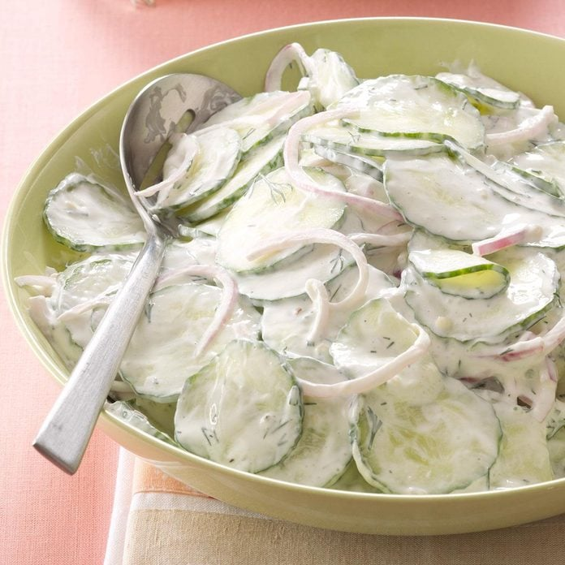

Cucumber Salad
Original recipe

Time
Prep: 20 min
Description
Cucumber salad is a refreshing Polish dish featuring crisp cucumber slices bathed in a creamy yogurt dressing.
This light and tangy salad are often seasoned with herbs, creating a delightful blend of flavors that perfectly
complements various Polish meals. Enjoyed as a refreshing side, the cucumber salad with yogurt adds a cool and
appetizing element to the dining experience.
Ingredients
- 2 English cucumbers, thinly sliced
- 1 teaspoon salt
- 1-1/2 cups sour cream
- 1/4 cup thinly sliced red onion
- 1/4 cup snipped fresh dill
- 2 tablespoons white wine vinegar
- 2 garlic cloves, minced
- 1 teaspoon sugar
- 1 teaspoon coarsely ground pepper
Steps
- Place cucumbers in a colander over a bowl; sprinkle with salt and toss. Let stand 15 minutes. Squeeze and
blot dry with paper towels.
- In a large bowl, combine the remaining ingredients; stir in cucumbers. Refrigerate, covered, at least 1
hour.
Main page